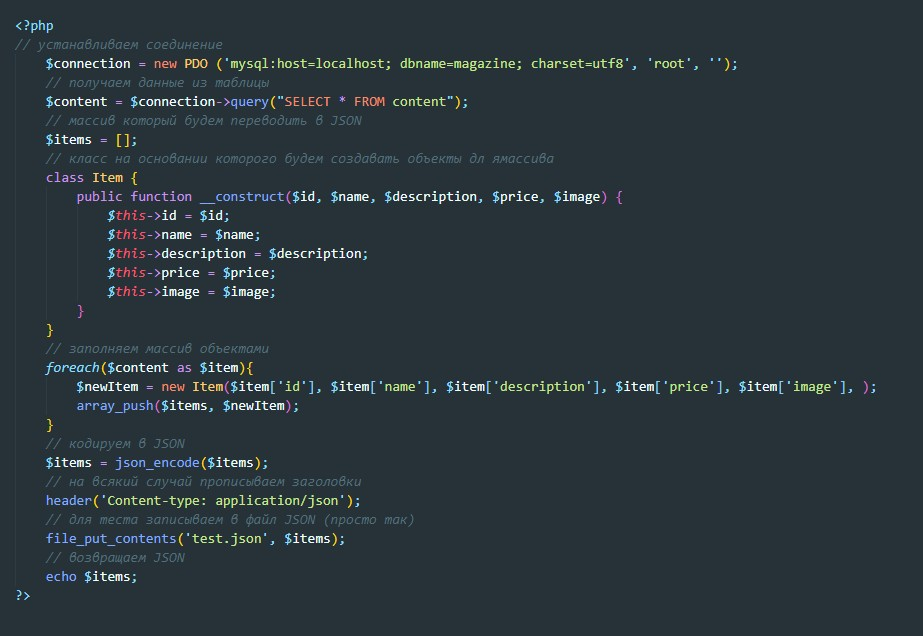

Преобразование данных из БД (MySQL) d JSON
Ссылка на GitHub
Алгоритм действий следующий
- Получить данные из БД
- Создать пустой массив
- Создать класс который будет создавать объект с ключами
- Пробежаться по массиву полученному из БД и на каждой итерации создавать объект на основании класса и запушить этот объект в новый массив
- После этого новый массив с объектами кодируем в JSON и возвращаем его через echo
